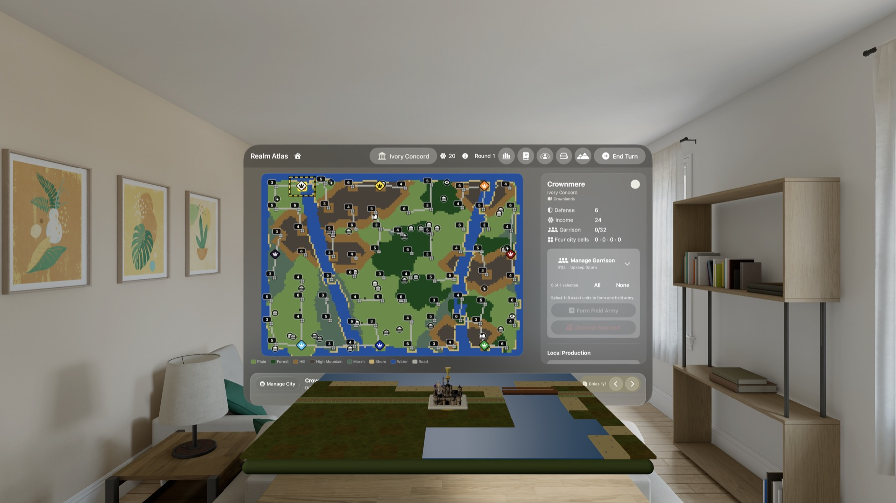
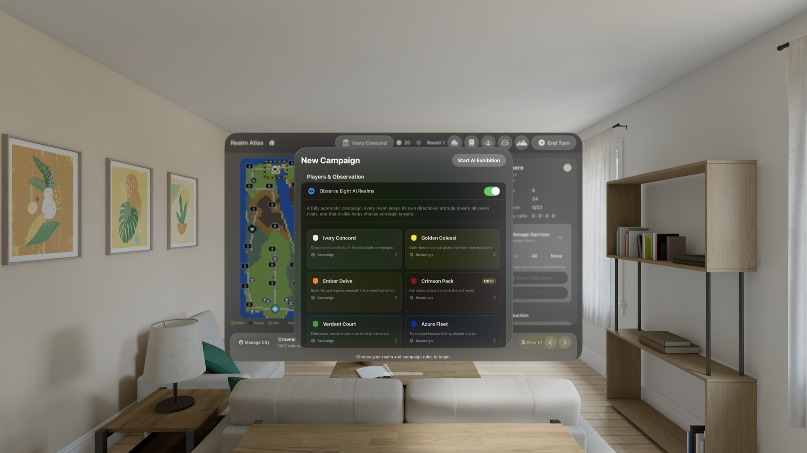
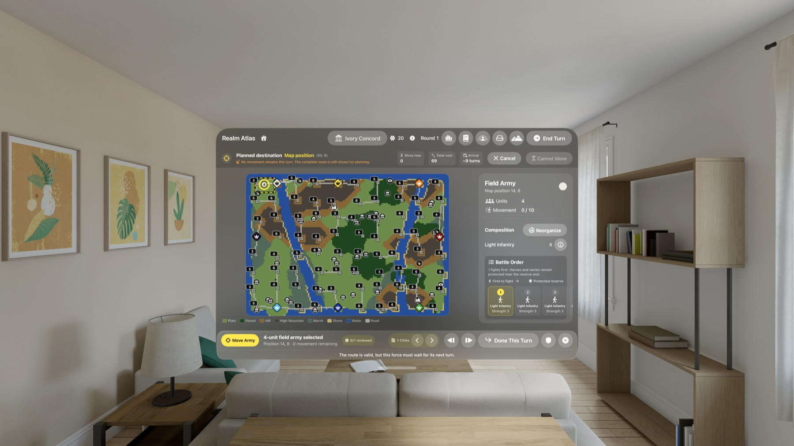
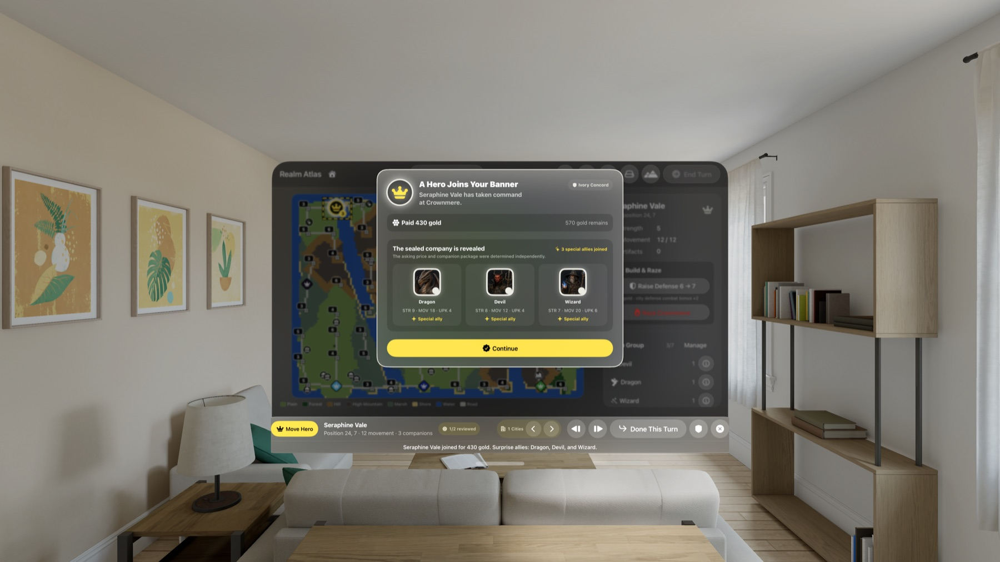
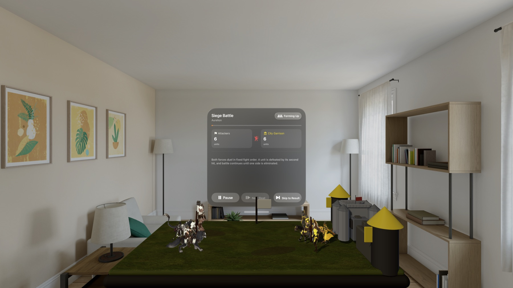
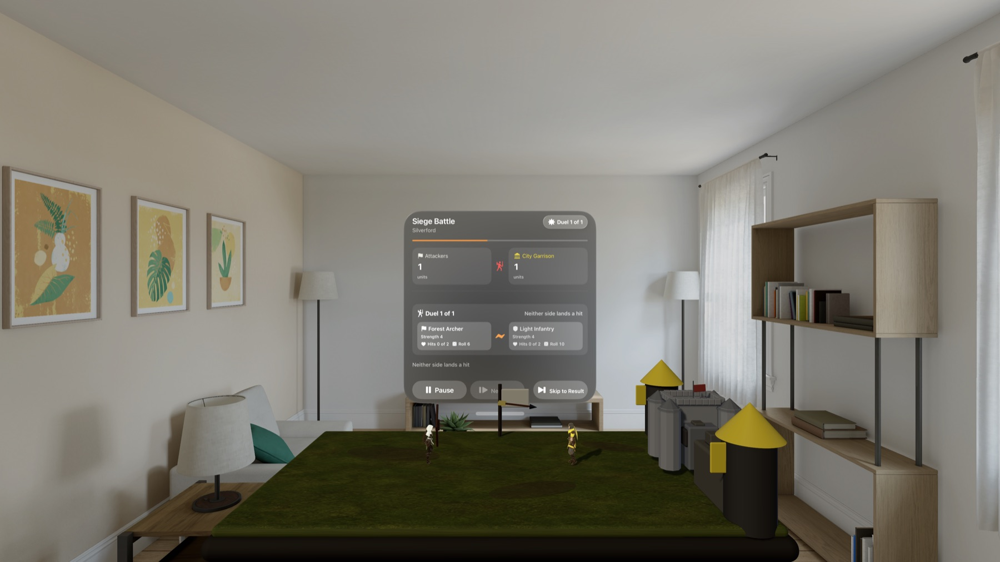
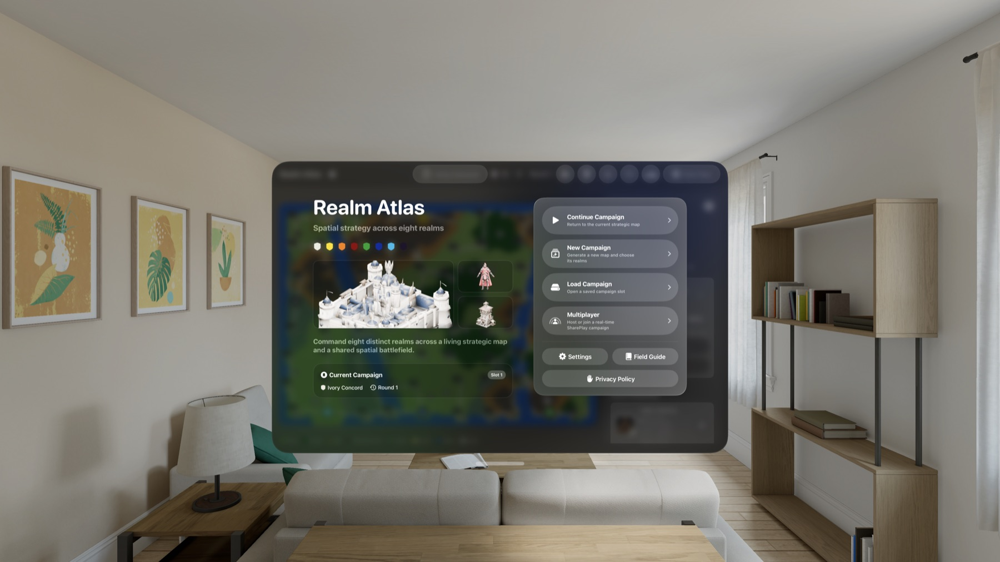

從世界地圖下令，再看軍隊走上眼前的戰爭沙盤。
RealmAtlas 把大型回合制戰略分成三個連續層次：在完整地圖判斷八國局勢、在立體沙盤追蹤區域行軍，再進入戰鬥舞台看每一次決鬥如何發生。

- 可用裝置
- Apple Vision Pro
- 下載方式
- 付費下載
22 秒實機 gameplay：從八 AI 觀戰走進戰鬥
這段實機錄影位於第 24 回合的 AI 展示戰役。完整地圖會指出目前行動的王國、目標與逐格行軍；前方沙盤同步移動軍隊，遭遇守軍後再切換成有控制面板、兵種模型與逐次決鬥的戰鬥舞台。錄影背景使用 visionOS 的 Jupiter Environment；RealmAtlas 以共存的 Mixed Immersive Space 留住系統環境，同時用自己的光源維持地形與單位辨識度。
從親自指揮到八 AI 展示，都使用同一套戰役規則
新戰役可以設定零到八個真人王國、先手勢力、地圖 seed，以及一般 D10 或激烈 D12 戰鬥。斥候、隊長、軍師與霸主四種 AI 會以不同程度處理擴張、集結、探索、供應與敵對關係。選擇零位真人即可觀看八國自行競逐；任何時候按下停止觀戰，遊戲會完成目前安全步驟，再讓你接管一個或多個仍存活的王國。

每一道命令都有路線、成本與可追蹤的後果
完整地圖標出目前 16 × 12 的立體區域。選定目的地後，路線面板會分開顯示本回合能走的路段、總移動成本與預估抵達回合；步兵、騎兵、飛行與海運會用不同動作和空間聲音逐格推進。城市佔四格、可容納三十二名守軍，並有在地生產、跨城補給、收入與維持費。部隊還能提升城防、建立文化風格不同的塔樓，或把城市與塔永久夷為廢墟。

英雄不是加成圖示，而是會帶來變數的獨立隊伍
英雄會以不知道同行者的密封條件提出招募；付出金幣後，才會揭露他是單獨加入，或帶著龍、惡魔、巫師等特殊盟友。世界裡有四十二處遺跡、神殿、圖書館與賢者地點，以及十四件原創神器。守護者戰鬥、祝福、情報與寶物都會改變後續選擇；英雄敗亡時，攜帶的神器也可能留在戰場等待回收。

先鎖定戰鬥紀錄，再讓空間演出把它說清楚
出兵前會顯示雙方戰鬥順序、地形、城防與群體修正；確認後，遊戲一次鎖定逐次決鬥、每輪擲骰、命中與傷亡。戰鬥沙盤只負責呈現這份既定紀錄：十五種兵種、英雄、守軍與城堡會依近戰、弓箭、魔法、火焰與飛行方式演出。你可以暫停、逐拍、重播或直接跳到結果，任何操作都不會重新擲骰。


複雜規則留在需要時才打開的地方
重新設計的軍議戰地手冊以圖像章節整理操作、英雄、敵對關係、八國、十五種兵種、地形與築城規則；城市、部隊、英雄和戰前面板的說明按鈕會直接帶到相關條目。帝國報告能回到指定軍隊或城市，戰役紀事保存最近 240 筆生產、探索、外交、築城與戰鬥事件，勝勢評估則清楚標示為相對戰略估計，不偽裝成勝率。
自己推演、同機傳遞，或透過 SharePlay 共享戰役

隱私與執行邊界
RealmAtlas 不含廣告或第三方分析 SDK，也不為開發者蒐集位置、照片、聯絡人或遊戲紀錄。戰役、復原存檔與偏好儲存在裝置上；模型、地圖、語音、音效、AI 決策與戰鬥結果均由 App 內建資產和程式在裝置端執行。使用者主動啟用 SharePlay 時，大廳選擇、工作階段識別碼與戰役狀態會透過 Apple Group Activities 在參與者之間交換，不會送往開發者營運的伺服器。
RealmAtlas visionOS 1.0 已在 Apple Vision Pro 的 App Store 正式上架。美國商店售價為 US$8.99、分級 12+；App 提供 11 種書面語言，以及 10 種語言的預先產生語音提示。
Issue orders on the world map, then watch armies enter the war table in front of you.
RealmAtlas presents large-scale turn-based strategy in three continuous layers: judge eight realms on the complete map, follow regional movement on a spatial diorama, and enter the battle stage to see each duel resolve.
- Devices
- Apple Vision Pro
- Download
- Paid download
22 seconds of live gameplay: from eight-AI observation into battle
This device recording begins during round 24 of an AI exhibition. The complete map identifies the acting realm, target, and cell-by-cell route; the tabletop moves the same formation in front of the player, then changes into a battle stage with its own controls, unit models, and sequential duels. The footage uses the visionOS Jupiter Environment. RealmAtlas coexists with that system Environment while its authored lighting keeps terrain and units legible.
Human command and eight-AI exhibition use the same campaign rules
A new campaign can assign zero to eight human realms, the first acting realm, a map seed, and Normal D10 or Intense D12 combat. Scout, Captain, Strategist, and Sovereign AI levels apply increasing judgment to expansion, consolidation, exploration, supply, and rivalry. Select zero humans to let all eight realms compete. Stop observing at any time and the game finishes its current safe step before letting you take over one or several surviving realms.
Every order has a route, cost, and traceable consequence
The complete map outlines the current 16 × 12 spatial region. After a destination is selected, the route panel separates this turn's legal segment from the complete plan and shows total movement cost and estimated arrival round. Infantry, mounted, flying, and naval groups advance cell by cell with distinct movement and spatial cues. A four-cell city can hold thirty-two defenders and manages local production, supply routes, income, and upkeep. Forces can raise city defense, build culture-specific towers, or permanently raze cities and towers.
Heroes are independent parties that bring uncertainty into the campaign
Heroes arrive through sealed offers that do not reveal their companions before payment. Only after accepting does the player learn whether the hero came alone or brought special allies such as a Dragon, Devil, or Wizard. The world includes forty-two ruins, temples, libraries, and sages plus fourteen original artifacts. Guardian battles, blessings, intelligence, and relics shape later choices, and a defeated hero can leave carried artifacts behind for someone else to recover.
Lock the combat record first, then let spatial presentation explain it
The prebattle view shows both fight orders, terrain, fortifications, and group modifiers. Confirmation locks every sequential duel, roll, hit, and casualty at once. The battle tabletop then presents that record through fifteen unit kinds, heroes, defenders, and keeps using melee contact, arrows, magic, fire, and aerial movement. Pause, advance one beat, replay, or skip to the result—none of those controls rerolls the battle.
Complex rules stay available without crowding every decision
The redesigned War Council Field Guide uses visual chapters for controls, heroes, rivalry, the eight realms, fifteen unit kinds, terrain, and fortifications. Help buttons in city, force, hero, and prebattle views open the exact related entry. The Empire Report returns directly to a selected army or city. The War Chronicle retains the latest 240 production, exploration, diplomacy, structure, and battle events. Victory Outlook is explicitly labeled as a relative strategic estimate—not disguised as win probability.
Play alone, pass one headset, or share a campaign through SharePlay
Privacy and runtime boundaries
RealmAtlas contains no advertising or third-party analytics SDK and does not collect location, photos, contacts, or gameplay records for the developer. Campaigns, recovery saves, and preferences remain on device. Models, maps, voices, sound effects, AI decisions, and combat outcomes run from bundled assets and code. When the user chooses SharePlay, lobby choices, participant session identifiers, and campaign state are exchanged among participants through Apple Group Activities—not sent to a developer-operated server.
RealmAtlas visionOS 1.0 is now available on the App Store for Apple Vision Pro. It is US$8.99 in the United States with a 12+ age rating, localized text in 11 written languages, and pre-generated spoken cues in 10 spoken languages.